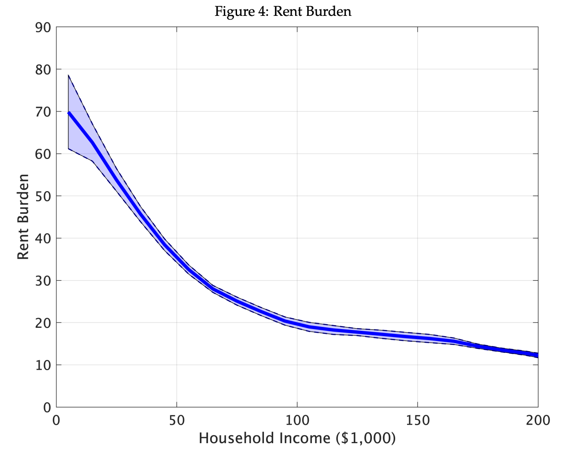

There are 3.6 million eviction cases filed each year in the U.S.
The negative outcomes associated with housing insecurity has triggered a public debate over policies that address evictions

If you believe the representative of the sample of Collinson [2022] the outcomes of eviction orders are noisy (new address rate increases by 8 percentage points)
The overall match rate is 36%.
Assumes rents are priced in a risk-neutral manner, such that for each lease investors break even in terms of discounted expected profits